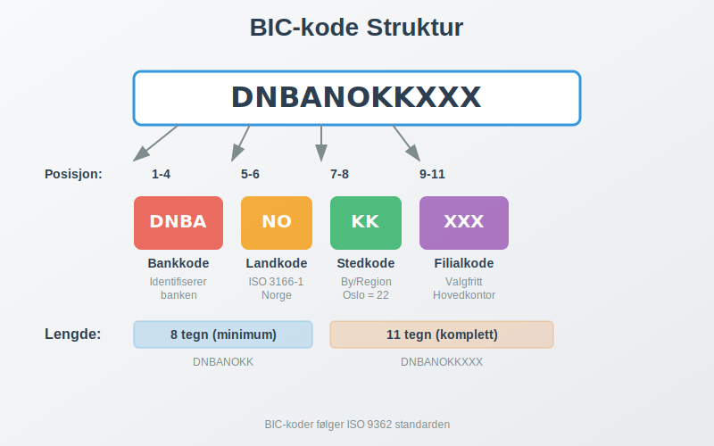
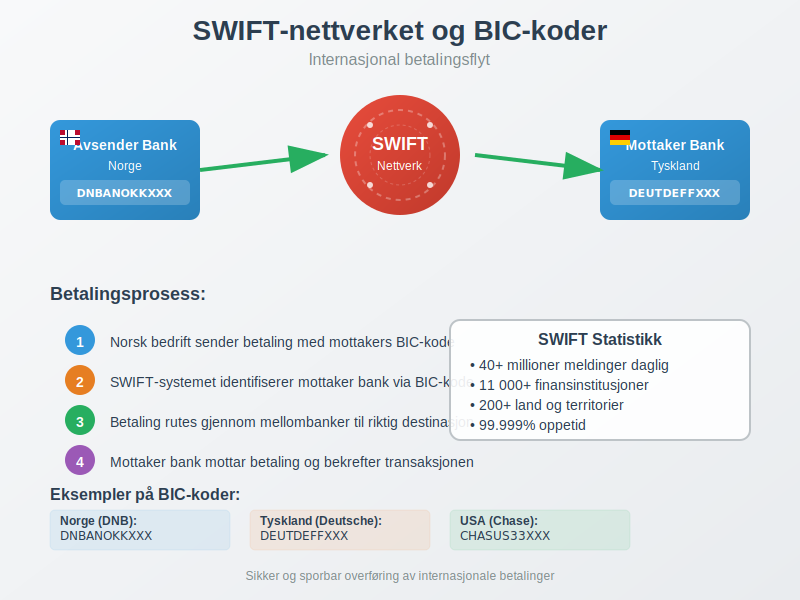
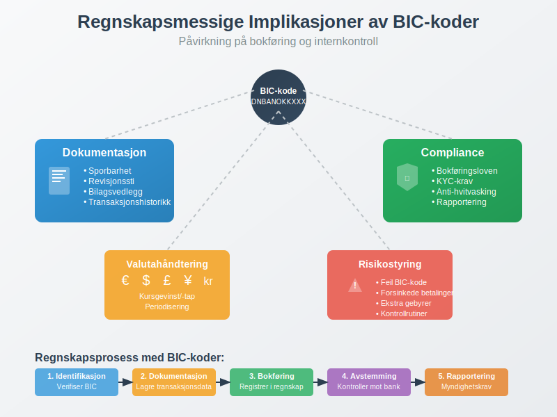

BIC-kode (Bank Identifier Code) er en internasjonal standard som brukes for å identifisere banker og finansinstitusjoner ved grenseoverskridende betalinger og finansielle transaksjoner. For norske bedrifter som driver med internasjonal handel, er forståelse av BIC-koder essensielt for korrekt håndtering av banktransaksjoner og valutahandel.
BIC-koden fungerer som en digital adresse for banker i det globale finanssystemet og er uunnværlig for korrekt bokføring av internasjonale transaksjoner og oppfyllelse av regnskapsmessige krav.
Hva er BIC-kode?
BIC-kode står for Bank Identifier Code og er også kjent som SWIFT-kode, oppkalt etter SWIFT (Society for Worldwide Interbank Financial Telecommunication) som administrerer systemet. Denne koden er en unik identifikator som sikrer at internasjonale betalinger når frem til riktig bank og filial.

BIC-kodens Struktur
En BIC-kode består av 8 eller 11 tegn og er bygget opp som følger:
| Posisjon | Lengde | Beskrivelse | Eksempel |
|---|---|---|---|
| 1-4 | 4 tegn | Bankkode - Identifiserer banken | DNBA |
| 5-6 | 2 tegn | Landkode - ISO 3166-1 alpha-2 | NO |
| 7-8 | 2 tegn | Stedkode - Identifiserer byen/regionen | 22 |
| 9-11 | 3 tegn | Filialkode - Identifiserer spesifikk filial (valgfritt) | XXX |
Eksempel på Norske BIC-koder
Her er noen eksempler på BIC-koder for store norske banker:
| Bank | BIC-kode | Forklaring |
|---|---|---|
| DNB | DNBANOKKXXX | DNB Bank ASA, Norge, Oslo |
| Nordea | NDEANOKK | Nordea Bank Norge ASA |
| Sparebank 1 | SPRONO22 | Sparebank 1 SR-Bank |
| Handelsbanken | HANDSESS | Svenska Handelsbanken (norsk filial) |
BIC-kodens Rolle i Internasjonale Betalinger
BIC-koder er fundamentale for SWIFT-nettverket, som håndterer over 40 millioner meldinger daglig mellom mer enn 11 000 finansinstitusjoner i over 200 land. For norske bedrifter betyr dette sikker og sporbar overføring av betalingsmidler på tvers av landegrenser.

Hvordan BIC-koder Fungerer i Praksis
Når en norsk bedrift skal sende en internasjonal betaling, skjer følgende prosess:
- Identifikasjon: Mottakers BIC-kode identifiserer riktig bank
- Routing: SWIFT-systemet ruter betalingen gjennom riktige mellombanker
- Levering: Betalingen ankommer mottakers bank med korrekt identifikasjon
- Konfirmasjon: Bekreftelse sendes tilbake til avsender
Dette systemet sikrer at banktransaksjoner kan spores og dokumenteres korrekt for regnskapsformål.
BIC-kode vs. IBAN - Forskjeller og Sammenheng
Mens BIC-koden identifiserer banken, identifiserer IBAN-nummeret (International Bank Account Number) den spesifikke kontoen. Begge er nødvendige for internasjonale betalinger:
| Aspekt | BIC-kode | IBAN |
|---|---|---|
| Formål | Identifiserer bank/finansinstitusjon | Identifiserer spesifikk bankkonto |
| Lengde | 8 eller 11 tegn | Opptil 34 tegn (15 i Norge) |
| Struktur | Bankkode + Landkode + Stedkode + Filialkode | Landkode + Kontrollsiffer + Bankkode + Kontonummer |
| Eksempel | DNBANOKKXXX | NO93 8601 1117 947 |
Praktisk Anvendelse
For en komplett internasjonal betaling trenger du:
- BIC-kode for å identifisere mottakers bank
- IBAN for å identifisere mottakers spesifikke konto
- Betalingsreferanse for korrekt avstemming
Regnskapsmessige Implikasjoner av BIC-koder
For norske bedrifter har BIC-koder flere viktige regnskapsmessige implikasjoner som påvirker både bokføring og internkontroll.

Dokumentasjon og Sporbarhet
BIC-koder bidrar til:
- Fullstendig dokumentasjon av internasjonale transaksjoner
- Sporbarhet av betalinger for revisjonsformål
- Korrekt identifikasjon av motparter i regnskapet
- Overholdelse av bokføringslovens krav til dokumentasjon
Valutahåndtering og Kursrisiko
Ved internasjonale betalinger med BIC-koder må bedrifter håndtere:
- Valutakurser på transaksjonstidspunktet
- Kursgevinster og kurstap i regnskapet
- Sikringsstrategier for valutarisiko
- Periodisering av valutaeffekter
- Fjernleverbare tjenester har spesielle MVA-regler ved grenseoverskridende levering
BIC-koder i Norsk Banksektor
Den norske banksektoren har implementert BIC-koder som en integrert del av det internasjonale betalingssystemet. Dette påvirker hvordan norske bedrifter håndterer bankinnskudd og internasjonale transaksjoner.
Norske Bankers BIC-struktur
Norske BIC-koder følger et konsistent mønster:
- Landkode: Alltid “NO” for Norge
- Stedkode: Vanligvis “22” for Oslo, men kan variere
- Bankkode: Unike 4-tegns koder for hver bank
Implementering i Norske Betalingssystemer
Norske banker har integrert BIC-koder i:
- Nettbanktjenester for privatpersoner og bedrifter
- BankGiro-systemet for internasjonale betalinger
- Regnskapssystemer for automatisk bokføring
- Rapporteringssystemer for myndighetskrav
Praktiske Råd for Bedrifter
For norske bedrifter som håndterer internasjonale transaksjoner, er det viktig å etablere gode rutiner rundt BIC-koder:
Beste Praksis for BIC-håndtering
- Verifiser alltid BIC-koder før du sender betalinger
- Oppbevar dokumentasjon av alle internasjonale transaksjoner
- Implementer kontrollrutiner for å unngå feil i BIC-koder
- Tren personalet i korrekt bruk av BIC-koder
Vanlige Feil og Hvordan Unngå Dem
De mest vanlige feilene ved bruk av BIC-koder inkluderer:
- Feil BIC-kode: Kan føre til forsinkede eller returnerte betalinger
- Manglende BIC-kode: Kan resultere i ekstra gebyrer eller avvist betaling
- Utdaterte BIC-koder: Banker kan endre sine koder ved fusjoner eller omorganiseringer
- Feil kombinasjon: BIC-kode som ikke matcher IBAN-kontoen
Kontrollrutiner for BIC-koder
Etabler følgende kontrollrutiner:
- Dobbel verifikasjon av BIC-koder før betaling
- Regelmessig oppdatering av BIC-database
- Attestering av internasjonale betalinger
- Oppfølging av betalingsstatus
Fremtiden for BIC-koder
BIC-systemet utvikler seg kontinuerlig for å møte nye krav i det globale finanssystemet. Viktige utviklingstrender inkluderer:
Digitalisering og Automatisering
- API-integrasjoner for sanntids BIC-validering
- Automatisk BIC-oppslag i regnskapssystemer
- Kunstig intelligens for feildeteksjon
- Blockchain-teknologi for økt sikkerhet
Regulatoriske Endringer
- Økt rapporteringskrav for internasjonale transaksjoner
- Strengere KYC-krav (Know Your Customer)
- Anti-hvitvasking regulering
- GDPR-compliance for databehandling
Konklusjon
BIC-koder er en fundamental komponent i det moderne internasjonale finanssystemet og spiller en kritisk rolle for norske bedrifter som driver med grenseoverskridende handel. Korrekt forståelse og anvendelse av BIC-koder sikrer:
- Effektive internasjonale betalinger uten forsinkelser eller feil
- Korrekt regnskapsføring av internasjonale transaksjoner
- Overholdelse av regulatoriske krav
- God internkontroll og sporbarhet
For bedrifter som ønsker å optimalisere sin håndtering av internasjonale betalinger, er det essensielt å etablere robuste rutiner for BIC-koder som en del av den overordnede bankavstemming og regnskapsprosessen.
Ved å følge beste praksis og holde seg oppdatert på utviklingen innen BIC-systemet, kan norske bedrifter sikre smidig og sikker håndtering av sine internasjonale finansielle transaksjoner.